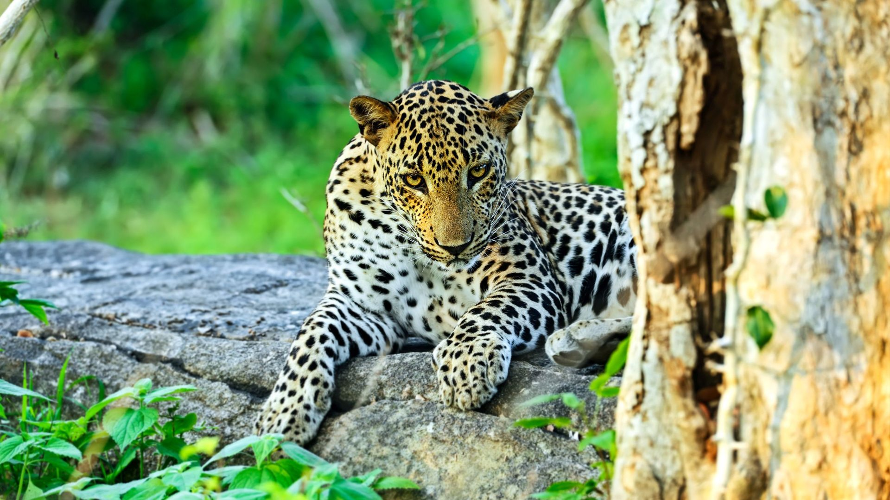

Embark on a journey to discover the incredible variety of wildlife that calls Sri Lanka home. From the magnificent Sri Lankan elephant to the mysterious leopard, each species plays a vital role in shaping the island's diverse ecosystem. Explore the unique connections between these animals, forming a rich and vibrant tapestry that highlights the beauty of Sri Lanka's natural world. This collection of native animals paints a vivid picture, showcasing the importance and wonder of the island's wildlife.
In this living gallery of nature, discover the harmonious interactions between diverse species, each playing a unique role in the intricate web of life. Marvel at the acrobatic feats of mischievous monkeys swinging through the emerald canopy and eavesdrop on the melodic conversations of colorful birds that paint the skies.
Join us on this immersive journey, where the allure of Sri Lanka's wildlife goes beyond observation.
